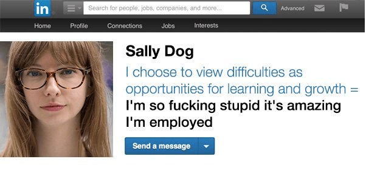
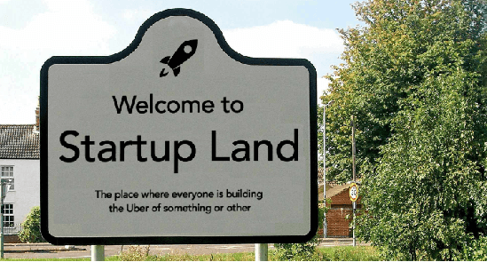

Michel is a writer who is deeply convinced of how traditional values are crucial to build a civilization. Blue-haired SJWs have not yet arrived in his village. Pronouns: he/his/him.


Over the last years, LinkedIn has seen a surge in its number of users, becoming the go-to site for job searching and networking and reaching an astounding membership of 106 million users worldwide. While this tool can be really useful if you keep a professional attitude, this professional network has in many ways become a light version of Facebook with suits and ties, shoving virtue-signalling articles down its users’ throats on a daily basis.
Here is some annoying stuff you are likely to find on LinkedIn…

Once a girl has landed a good cubicle job in Human Resources, she cannot help herself: she has to talk about how great her life is. Instagram and Facebook are not enough; LinkedIn gives the typical you-go-girl a platform to share her virtue to the world. It sounds just like this: “I just hired a 50-year old black female and the result is beyond expectations!” This kind of statement is followed by a sugary story on how it is important to fight against prejudice and how good it is be inclusive.
These stories, unsurprisingly, are shared and commented on by beta male orbiters who are stunned by the power of the message, but they are not aware that the typical HR girl is able to fire a random coworker for supposedly sexist remarks if it helps her develop her career.

You will often find this kind of press release: “Our company, Globocuck Inc. has just raised $3,000,000 to Uberize the frozen foods market and develop synergies with real estate, thanks to Buttplug Ventures.” People will comment on the founder’s awesome strategy and the jobs he will create. The future is bright.
After a bit of analysis, you can be sure that the start-up in question will go bankrupt in the following year. The founder has probably used the annoying gibberish and vocal tone of Apple keynotes to sell this idea to Buttplug Ventures. Dozens of developers and salesmen will be hired and pressured like hell to make a profit out of a hypothetical business plan. When the company does not reach the quarterly objectives, it will hire some pricey consultants to save the day, but the day will not be saved at all.
It is estimated that nine out of ten start-ups don’t scale up, a fact that most people don’t fully grasp.
Musk, Bezos, and Zuckerberg and company have created a new corporate culture where happiness is at the center of performance. Any start-up now has ping-pong tables, unlimited free snacks, video games, and other kind of feel-good activities. Countless articles are shared on LinkedIn praising this new standard. Even brick-and-mortar companies succumb to this paradigm and invest big amounts of money to have their own incubator, aping the aforementioned start-up culture.
While this is important to give employees a proper working environment, companies often go way overboard. For example, many companies are now hiring “Chief Happiness Officers” to implement a fun culture, making the open-space look like a daycare. The reality is that employees are pushed to do unpaid extra hours and if they are not happy with that, the Xmen Breeder will show them the door. Yes, someone has the job title of “Xmen Breeder” in a company somewhere.
Pseudo-economic articles are often shared on LinkedIn to present and analyze the achievements of big companies and entrepreneurs. They include such bilge as “Look at How Good Walmart is at Advertising,” “Millennials Don’t Buy Diamonds, But Swarovski Has the Solution,” “Bill and Melinda Gates Have Such a Visionary Foundation,” and so on.
I will take the example of Netflix, which is often cited and praised for its strong algorithm and how it uses your data to “enhance the user experience.” There are never critical insights on how Netflix has a negative impact on its users, like binge-watching, or how the California-based company has a massive amount of debt to sustain its development.
Readers of Return of Kings will also agree with me on this point: the never-ending promotion of liberal values and white male shaming are not a sign of a responsible and healthy company.
You would think that all of the articles you find on LinkedIn are dedicated to business. Sure, you can find factual content on business performance. You can even find unbiased content like “Trump’s Leadership Lessons.” As far as I am concerned, the algorithm always displays boring articles like “Brexit is a Danger” and “The European Union Has a Great Strategy.” A contact of mine also liked a you-go-grrl post quoting Oprah Winfrey, and it appeared on my feed.
The #MeToo movement is also something big in the professional network. You have the typical you-go-grrl article on why #MeToo has a place on LinkedIn, but fair enough: we are used to these kinds of pseudo-analytical pieces from a woman. Worse, beta male orbiters voice their discontent: according to an engineer, #MeToo stories should be shared more on LinkedIn, because his experience of being a shoulder to cry on shows that some of his female coworkers have experienced gross behavior by evil men.
Richard Branson: “let me inspire you.”
LinkedIn has also a goal: inspiring you. For this, it has a bunch of “influencers,” the biggest ones being successful entrepreneurs like Bill Gates and Richard Branson.
Content from them would appear from time to time, with theses like “when I founded Globocuck Inc., I thought of my grandfather, who taught me how to fish trout, and it was good.” People will share this deep vision of life, commenting on how inspirational these words are. I don’t deny that you need inspiration to succeed—as well as positive thinking—but the truth is that these businessmen are pretty far away from this Care Bears image.
Most of the companies want to make us believe that they are responsible and respectable. Starbucks calls their employees “partners,” and its longtime CEO and Chairman Howard Schultz is involved in every awareness movement.
Executives will not be as inspiring when the shit hits the fan: take the example of Yellowpages.ca in Quebec, which recently laid off 500 people. They were located in a vibrant area of Montreal, and had an inspiring CEO. All that pure goodness was shared urbi et orbi, but it was not enough to meet the quarterly objectives.
LinkedIn is dominated by big, left-wing corporations, and it is not healthy. It’s not because I don’t want companies to succeed, but they often stride pretty far away from their core missions. Local companies which offer true value to their clients have the possibility to advertise on this professional network, but it takes a big budget to stand out, with little or no results at the end.
While I recommend you have a minimum of activity on LinkedIn, you will find more value in going to professional networking events, where you will be able to find more diversity of thought.
Read More: What Is Virtue Signalling?